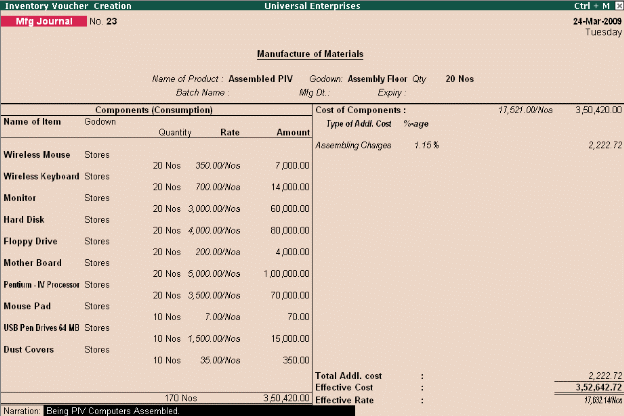

Bill of Materials
In many segments of the industries, especially in Manufacturing/Assembling organizations, there are number of components/inputs/spares that go into the manufacturing/assembling of finished Goods. Each process of manufacturing of raw materials to finished goods / intermediate goods comprises of a List of components known as Bill of Materials (BoM) containing the list of components involved in the manufacturing/assembling of the finished goods. In Tally.ERP 9, you can create a bill of materials and specify the list of items (along with the Godown and Quantity details) that are required for manufacturing the finished / intermediate product.
Once, the Bill of materials is created, you can use Manufacturing Journal and specify the quantity of finished goods that are to be manufactured. Tally.ERP 9, immediately selects all items required to manufacture the finished product and automatically adjusts (decreases) the stocks. You can also enter additional costs like wages, power, water charges etc, to the cost of the items used in manufacturing.
To enable Bill of Materials (BoM),
Go to Gateway of Tally > Inventory Info. > Stock Item > Create
# Press F12: Configure, set parameter Allow Component list details (Bill of Materials) to Yes
To create Bill of Materials (BoM),
# From the above Stock Item Creation screen,
# Specify Stock Item Name, Units of Measure and other details
# Set Alter Components (BoM) to Yes
# Select all Stock Items required /used for manufacture / assembly of the finished product along with Godown and Quantity details
# Save the screen
To create Manufacturing Journal Voucher, Go to Gateway of Tally > Inventory Vouchers > Alt+F7 (Stk Jrnl)
# Select Mfg Journal
# Select the name of the finished product to be manufactured / assembled
# Select the Godown / Stores and specify the Qty
Tally.ERP 9 automatically picks up all stock items to manufacture the finished product with their costs. You can also add additional manufacturing costs like labour, power, fuel, water charges etc.
